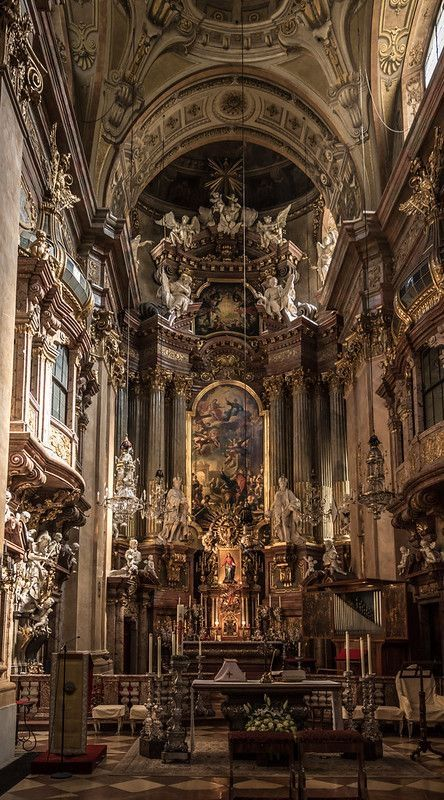
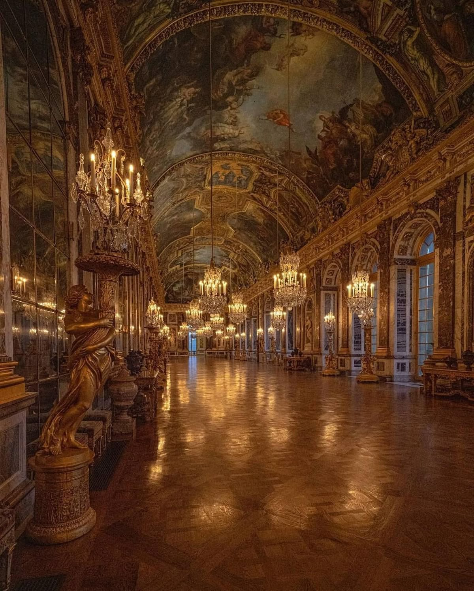
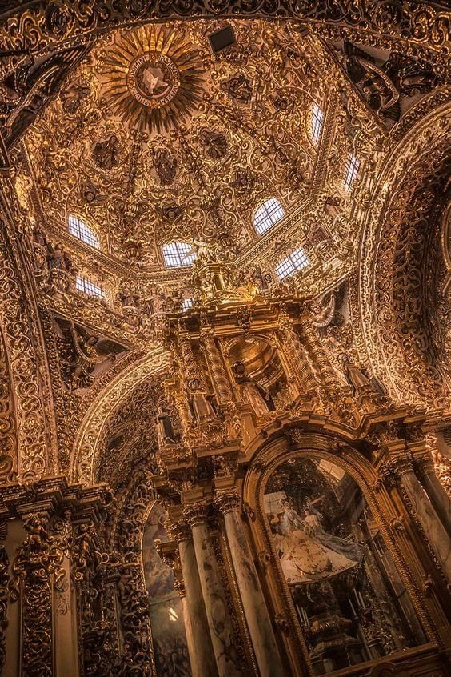

Baroque!
Barokke architectuur is een bouwstijl die ontstond in Europa in de 17e eeuw. Deze stijl staat bekend om haar rijke versieringen, grote gebouwen en dramatische vormen. Architecten gebruikten veel details, zoals beelden, ornamenten, koepels en grote trappen om gebouwen indrukwekkend te maken. Ook werden sterke contrasten, gebogen lijnen en veel decoratie gebruikt om beweging en emotie te tonen. Barokke gebouwen waren vaak kerken, paleizen en belangrijke openbare gebouwen, omdat de stijl macht en rijkdom moest laten zien. Bekende voorbeelden van barokke architectuur zijn de Sint-Pietersbasiliek en het Paleis van Versailles.


